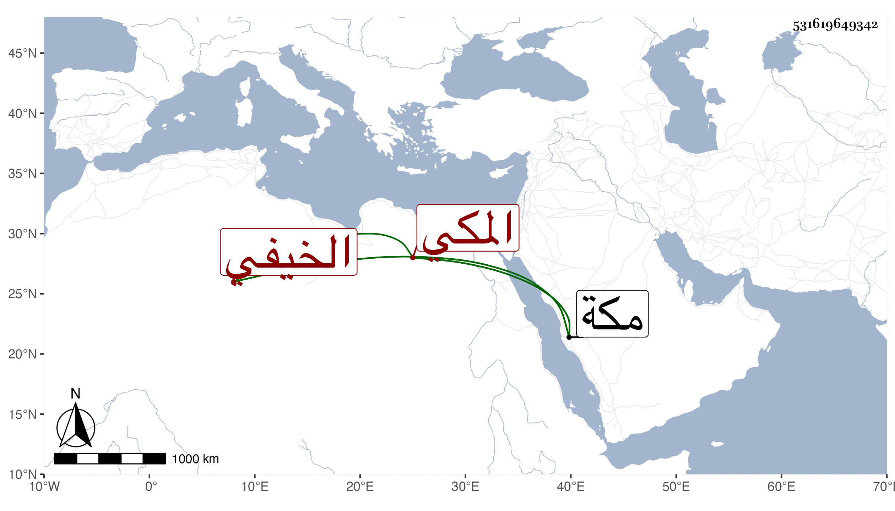

0902Sakhawi.DawLamic.ITO20230111-ara1.EIS1600.531619649342
Biography ID: 531619649342
أحمد بن سعد بن أحمد الشهاب الخيفي بالمعجمة ثم تحتانية بعدها فاء المكي حفظ القرآن وتنزل مع قراء سبع سودون الطياري وأجاز له في سنة سبع وثمانمائة الجوهري وعبد الكريم حفيد القطب الحلبي وأبو اليمن الطبري وعائشة ابنة عبد الهادي وغيرهم وسمع بمكة سنة أربع عشرة على الزين المراغي المسلسل بالأولية وختم البخاري وكان مباركا له نظم ، كتب عنه النجم بن فهد وقال مات في ليلة الأحد تاسع شعبان سنة سبع وثلاثين بمكة .
